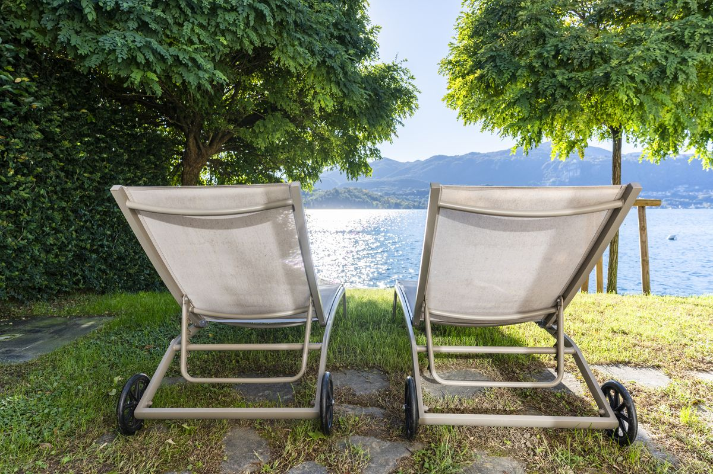
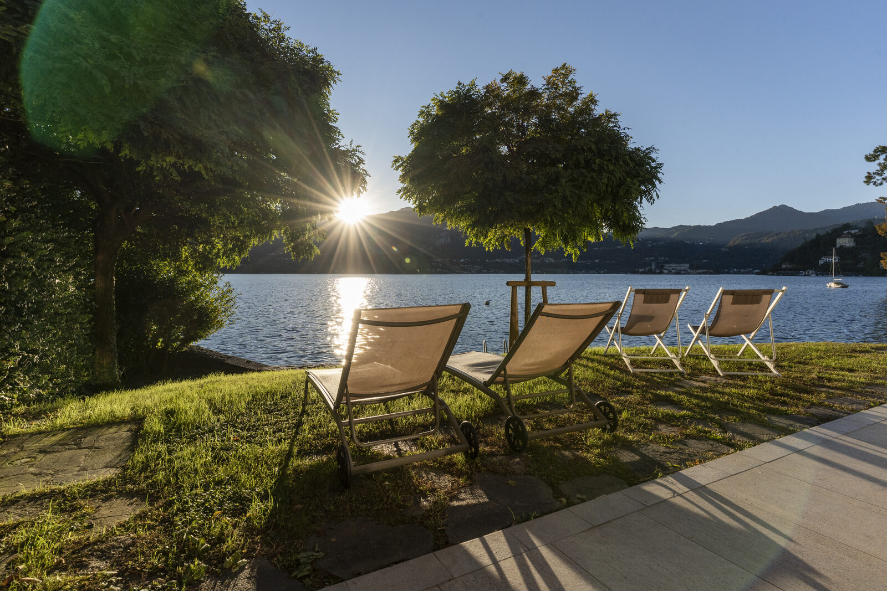
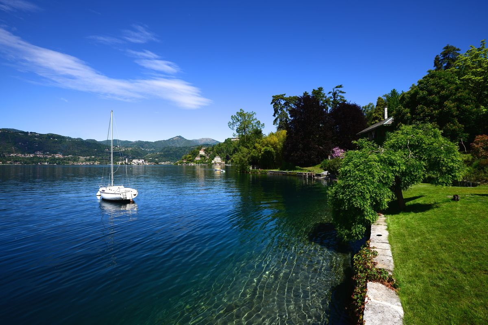

Ci chiedono spesso dove fare il bagno nel Lago d'Orta. La risposta sincera è: quasi ovunque. Dopo il suo spettacolare recupero ecologico, il Lago d'Orta è considerato uno dei laghi balneabili più puliti d'Europa — limpido, fresco e mai affollato come i grandi laghi. Ma non tutte le rive sono uguali: ecco la nostra guida alle spiagge del Lago d'Orta dove andiamo davvero, da nord a sud.
Bagnella — Omegna
All'estremità nord del lago, accanto al centro sportivo di Omegna, Bagnella è una spiaggia libera di prato e ciottoli con docce e un'area picnic ombreggiata con tavoli. L'ingresso in acqua è graduale, e questo la rende uno dei punti più comodi per chi è con i bambini. Nei weekend d'estate si riempie di famiglie della zona — arriva prima delle 11.
Approdo e Riva Pisola — Pettenasco
Pettenasco custodisce diverse piccole spiagge e aree attrezzate lungo la sua riva. La spiaggia dell'Approdo è libera e si trova proprio accanto all'imbarcadero del paese; Riva Pisola è più tranquilla, con il classico mix ortese di ciottoli e prato. Entrambe hanno quell'aria rilassata, da vita di paese, che caratterizza questo lato del lago.
Bagnera, Miami e Ortello — Orta San Giulio
Orta San Giulio ha tre zone balneabili libere, tutte raggiungibili a piedi dal centro storico: Bagnera, una grande area verde a due passi dalla piazza principale; la zona Miami, un tratto sabbioso con chiosco, lettini e ombrelloni — di fatto una spiaggia attrezzata; e Ortello. Docce e punti di ristoro le rendono le spiagge più comode se soggiorni vicino al borgo — e la vista verso la penisola è Orta allo stato puro.
Rialaccio — Pella
Sulla sponda occidentale, proprio di fronte all'Isola di San Giulio, la spiaggia del Rialaccio si allunga per circa 200 metri di ciottoli e sabbia. Molti da queste parti la considerano la spiaggia libera più bella del lago, semplicemente perché nuoti con la basilica dell'isola che sembra galleggiare davanti a te. Acqua profonda e limpida — il punto più profondo del lago (143 metri) si trova tra Pella e l'isola.

Porta di Lagna e Pascolo — San Maurizio d'Opaglio
Due spiagge comunali sulla riva sud-occidentale: Porta di Lagna, sempre aperta e libera, con bagni pubblici; e Pascolo, sabbia e ciottoli con un chiosco per un ristoro veloce. Meno famose del versante di Orta — ed è proprio per questo che le amiamo nei weekend di agosto.
Lido di Gozzano
All'estremità sud del lago, il Lido di Gozzano è quanto di più simile a un lido classico esista sull'Orta: lettini e ombrelloni a noleggio, un bar e un ristorante. Se vuoi una giornata di spiaggia con tutti i servizi senza guidare fino al Lago Maggiore, il posto è questo.

La temperatura dell'acqua, mese per mese
Il Lago d'Orta è un lago alpino, ma di quelli gentili. Indicativamente: a maggio l'acqua è ancora fresca, intorno ai 15–17 °C, a giugno sale a 19–21 °C e si comincia a nuotare bene, luglio e agosto sono il momento d'oro con 22–24 °C, e settembre resta spesso sui 19–20 °C — tra i bagni più belli dell'anno, senza la folla. Da ottobre ad aprile il lago è solo per gli appassionati di bagni freddi.

Fare il bagno con i bambini
Il lago è un'antica conca glaciale: in molti punti il fondale scende rapidamente sotto la linea dell'acqua. Con i bambini piccoli, scegli le spiagge con ingresso graduale — Bagnella a Omegna e la zona Miami a Orta sono le scelte più sicure — e tieni d'occhio la profondità ovunque altrove.
E i cani?
Le regole cambiano da comune a comune e da stagione a stagione; come regola generale, il primo mattino e le spiagge meno centrali sono le più tolleranti. Se stai organizzando una vacanza con il tuo cane, abbiamo scritto una guida dog-friendly dedicata al Lago d'Orta.
Oppure: una spiaggia tutta per te
E qui arriva la parte in cui siamo apertamente di parte. Villa Volpe è a tre metri dall'acqua, sulla sponda occidentale del lago — quella soleggiata — con la sua spiaggia privata: niente orari, niente coda al chiosco, niente vicini telo contro telo. Fai il bagno prima di colazione, lo fai a mezzanotte se ti va, e l'accesso al lago può essere attrezzato anche per chi si muove in sedia a rotelle. È, per quanto ne sappiamo, il modo più semplice di avere il Lago d'Orta tutto per te.